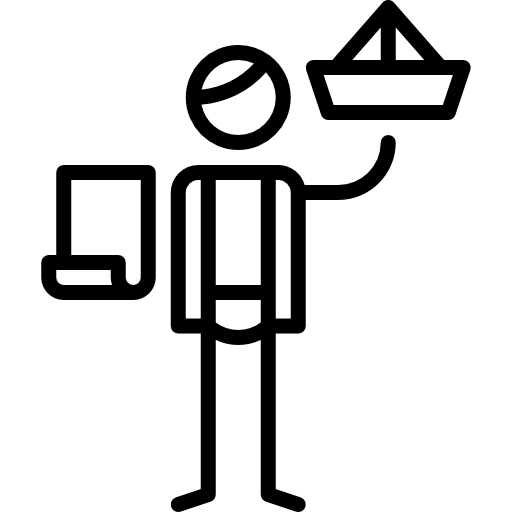

Industry expert in Build, Operations, Swaps, Modernization and Customer Delivery Services
Sales & Delivery services including Sites, Datacenters, Radio Access Network & Cloud
Top Skillse
Striving to produce excellence everyday. Open to new ideas, concepts and adapting new skills

Top Skills
- Hands-on Program & Project Management experience
- Business Case, B2B PreSales and RFx Support
- Presentations, Reporting & Stakeholder Engagement
- Improve and Optimize Business Processes
- Agile, Waterfall and Hybrid approaches of Project Management
- Rack/Stack installations in Datacenters, Cloud RAN & Legacy RAN Deployment in field
- Familiar with HTML,CSS, JS, NodeMon, Python, C Sharp, SQL, Java, VB, Unix
- Data mining & Visualization in PowerBI, Tableau, VB & Python

Professional Experience
-
Senior Program Manager, TELUS Canada (2021 to Date)
Handling multimillion programs across multiple streams of the organization with high level of visibility among the executives- 5G Launch (AWS & 3.5)- Network upgrades with physical Baseband modules and antennas on existing infrastructure and new deployments across the entire TELUS footprint
- Handling launch of high speed network in rural Canada. The program includes new product and services for end user
- vCU- Virtualized Central Unit upgrades and DU rehoming. Part of Cloud RAN program on 5G
- Go to Marketing strategy alignment and launch coordination with stores/customers
- Executive reporting and steering committee reviews on program progress and updates
Senior Project Manager, NOKIA Canada(2016 to 2021)
- Services umbrella in Bell involved $25M-$50M handled by 50-100 supporting team members/SMEs
- BELL Canada 4G/5G Modernization: Supported RFP, SoW and negotiations. Followed by delivery of the project services with the customer in wireless performance
- Managed & delivered G7 Summit- High Capacity Event support
- Services Project Manager on Indoor Build program
- Managed and delivered Megaplexer/ DCAP platform on OSS VMWare to setup traces & data collection (SaaS)
BELL Canada Account
- Deployed End2End advanced analytics solution in FM (E2E VoLTE as PaaS)
- Project manager for Refarming, and RF Planning
- Solution sales support for 3G refarming business case
- Small cells NPO lead for Canada small cells program
Freedom Canada
For more details (2016 to 2005), refer to my resume or contact me

Qualifications
- Master of Business Administration, MBA,(2018-2021), Stayer University, VA
- BSc in Electrical Engineering,(2001-2005), University of Eng. & Tech. Lahore
Certifications
- Project Management Professional (PMP), PMI
- Certified Scrum Master (CSM), Scrum Alliance
- Lean Six Sigma Green Belt (LSSGB), CSSC
- Cloud Practictioner Essentials, AWS
- Agile Development and Scrum, IBM
- DevOps, Cloud, and Agile Fundamentals, IBM